File: 000630.gt.txt (if the image is defective, simply delete all Arabic text and the line will be excluded)
والعصافير ؛ أطول أعمارا من البغال .
File: 000631.gt.txt (if the image is defective, simply delete all Arabic text and the line will be excluded)
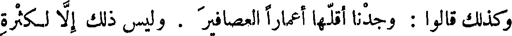
وكذلك قالوا : وجدنا أقلها أعمارا العصافير . وليس ذلك إلا لكثرة
File: 000632.gt.txt (if the image is defective, simply delete all Arabic text and the line will be excluded)
سفاد العصافير وقلة سفاد البغال .
File: 000633.gt.txt (if the image is defective, simply delete all Arabic text and the line will be excluded)
وجعل هؤلاء القوم زيادة عمر البغل على عمر أبويه دليلا على أن
File: 000634.gt.txt (if the image is defective, simply delete all Arabic text and the line will be excluded)
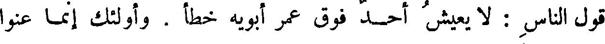
قول الناس : لا يعيش أحد فوق عمر أبويه خطأ . وأولئك إنما عنوا
File: 000635.gt.txt (if the image is defective, simply delete all Arabic text and the line will be excluded)

( النتاج المركب )
File: 000636.gt.txt (if the image is defective, simply delete all Arabic text and the line will be excluded)
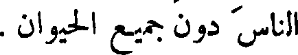
الناس دون جميع الحيوان .
File: 000637.gt.txt (if the image is defective, simply delete all Arabic text and the line will be excluded)
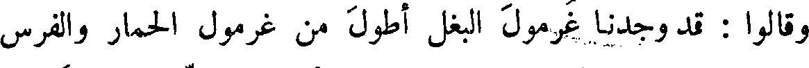
وقالوا : قد وجدنا غرمول البغل أطول من غرمول الحمار والفرس
File: 000638.gt.txt (if the image is defective, simply delete all Arabic text and the line will be excluded)
والبرذون ؛ وهؤلاء أعمامه وأخواله ؛ فقد وجدنا بعض النتاج المركب ،
File: 000639.gt.txt (if the image is defective, simply delete all Arabic text and the line will be excluded)
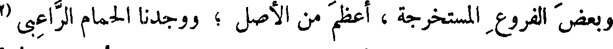
وبعض الفروع المستخرجة ، أعظم من الأصل ؛ ووجدنا الحمام الراعبي
File: 000640.gt.txt (if the image is defective, simply delete all Arabic text and the line will be excluded)
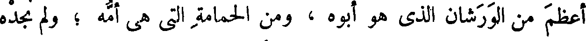
أعظم من الورشان الذي هو أبوه ، ومن الحمامة التي هي أمه ؛ ولم نجده
File: 000641.gt.txt (if the image is defective, simply delete all Arabic text and the line will be excluded)
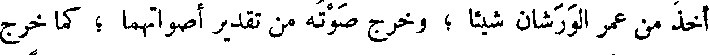
أخذ من عمر الورشان شيئا ؛ وخرج صوته من تقدير أصواتهما ؛ كما خرج
File: 000642.gt.txt (if the image is defective, simply delete all Arabic text and the line will be excluded)
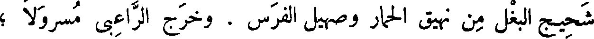
شحيج البغل من نهيق الحمار وصهيل الفرس . وخرج الراعبي مسرولا ؛
File: 000643.gt.txt (if the image is defective, simply delete all Arabic text and the line will be excluded)
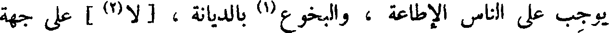
يوجب على الناس الإطاعة ، والبخوع(1) بالديانة ، [ لا(2) ] على جهة
File: 000644.gt.txt (if the image is defective, simply delete all Arabic text and the line will be excluded)

الاستبصار والمحبة ، وليس فيه صلاح معاش ولا تصحيح دين ! ؟ والناس
File: 000645.gt.txt (if the image is defective, simply delete all Arabic text and the line will be excluded)
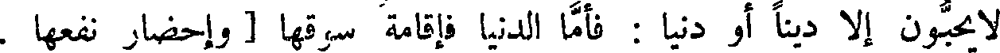
لا يحبون إلا دينا أو دنيا : فأما الدنيا فإقامة سوقها [ وإحضار نفعها .
File: 000646.gt.txt (if the image is defective, simply delete all Arabic text and the line will be excluded)
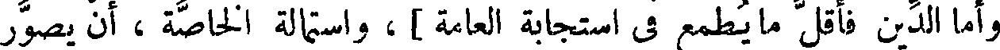
وأما الدين فأقل ما يطمع في استجابة العامة ] ، واستمالة الخاصة ، أن يصور
File: 000647.gt.txt (if the image is defective, simply delete all Arabic text and the line will be excluded)
في صورة مغلطة ، ويموه تمويه الدينار البهرج ، والدرهم [ الزائف ] الذي
File: 000648.gt.txt (if the image is defective, simply delete all Arabic text and the line will be excluded)
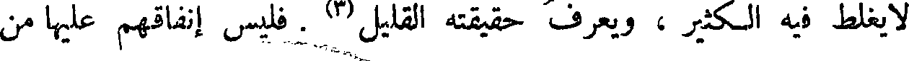
لا يغلط فيه الكثير ، ويعرف حقيقته القليل(3) . فليس إنفاقهم عليها من
File: 000649.gt.txt (if the image is defective, simply delete all Arabic text and the line will be excluded)
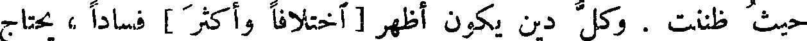
حيث ظننت . وكل دين يكون أظهر [ اختلافا وأكثر ] فسادا ، يحتاج
File: 000650.gt.txt (if the image is defective, simply delete all Arabic text and the line will be excluded)
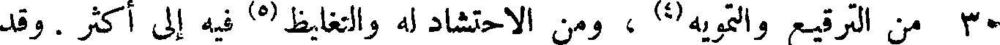
30 من الترقيع والتمويه(4) ، ومن الاحتشاد له والتغليظ(5) فيه إلى أكثر . وقد
File: 000651.gt.txt (if the image is defective, simply delete all Arabic text and the line will be excluded)
علمنا أن النصرانية أشد انتشارا من اليهودية تعبدا ، فعلى حسب ذلك
File: 000652.gt.txt (if the image is defective, simply delete all Arabic text and the line will be excluded)
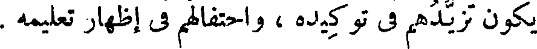
يكون تزيدهم في توكيده ، واحتفالهم في إظهار تعليمه .
File: 000653.gt.txt (if the image is defective, simply delete all Arabic text and the line will be excluded)
( فضل التعلم )
File: 000654.gt.txt (if the image is defective, simply delete all Arabic text and the line will be excluded)
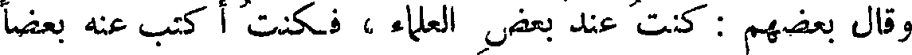
وقال بعضهم : كنت عند بعض العلماء ، فكنت أكتب عنه بعضا
File: 000655.gt.txt (if the image is defective, simply delete all Arabic text and the line will be excluded)
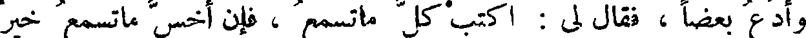
وأدع بعضا ، فقال لي : اكتب كل ما تسمع ، فإن أخس ما تسمع خير
File: 000656.gt.txt (if the image is defective, simply delete all Arabic text and the line will be excluded)
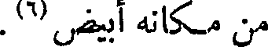
من مكانه أبيض(6) .
File: 000657.gt.txt (if the image is defective, simply delete all Arabic text and the line will be excluded)

( خصيان الحبشة والنوبة والسودان )
File: 000658.gt.txt (if the image is defective, simply delete all Arabic text and the line will be excluded)

فأما الخصيان من الحبشان والنوبة وأصناف السودان ، فإن الخصاء
File: 000659.gt.txt (if the image is defective, simply delete all Arabic text and the line will be excluded)
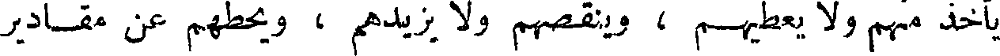
يأخذ منهم ولا يعطيهم ، وينقصهم ولا يزيدهم ، ويحطهم عن مقادير
To Save: `Ctrl+s`, make sure to choose `Webpage, complete`!